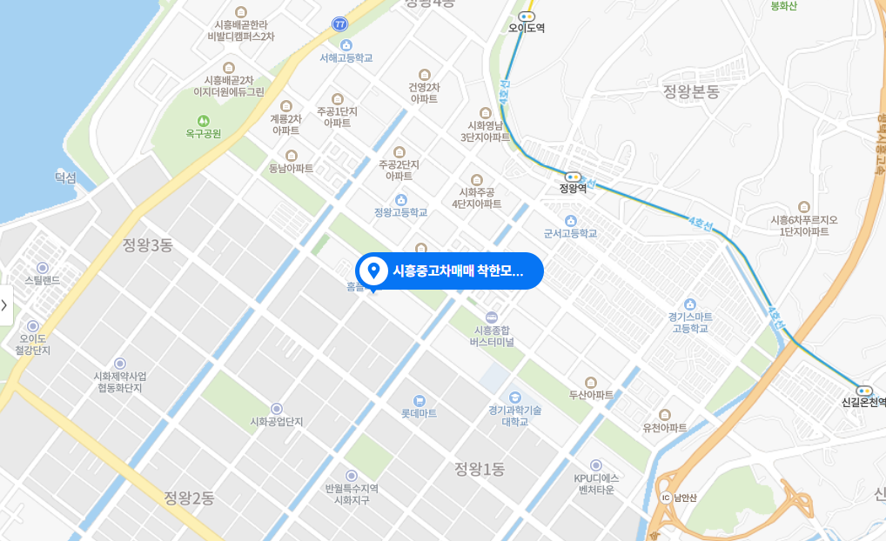

company
AJ셀카는 2006년 AJ렌터카의 자회사로 출범해 중고차 소매 판매 사업을 시작했다. 그리고 2014년 서울자동차경매장을 인수하여 자동차 경매 사업을 시작했다. 2016년 국내 최초로 기업형 '내 차 팔기 서비스'를 시작한 이후 오프라인 경매, 온라인 내 차 팔기 서비스를 앞세워 3년 연속 꾸준한 성장세를 이어왔다. 2019년에는 AJ셀카 출범 이래 첫 흑자 전환에 성공했으며, 온라인 내 차 팔기는 전년 대비 35% 성장했다.
